Ecological Models Summary
Long range models
| Model | Description |
|---|---|
| Discrete time | There are \(N\) individuals, two individuals are chosen at each time-step and the occupant of the first replicates into the second according to its invasion rate. |
| Continuous time | \(\begin{cases}\frac{\partial n_r}{\partial t}=n_r\cdot (n_s\cdot P_r - n_p \cdot P_p)\\ \frac{\partial n_s}{\partial t}=n_s\cdot (n_p\cdot P_s - n_r \cdot P_r)\\ \frac{\partial n_p}{\partial t}=n_p\cdot (n_r\cdot P_p - n_s \cdot P_s)\\ \end{cases}\) |
| Discrete time (mean field recurrence relations) |
\(\begin{cases} n_r[t+\Delta_t]=n_r[t] + \Delta_t \cdot n_r[t](n_s[t]P_r - n_p[t] P_p)\\ n_s[t+\Delta_t]=n_s[t] + \Delta_t \cdot n_s[t](n_p[t]P_s - n_r[t] P_r)\\ n_p[t+\Delta_t]=n_p[t] + \Delta_t \cdot n_p[t](n_r[t]P_p - n_s[t] P_s)\\ \end{cases}\) |
| Chemical reactions | \(\begin{cases} R + S \xrightarrow{P_r} 2R\\ S + P \xrightarrow{P_s} 2S\\ P + R \xrightarrow{P_p} 2P\\ \end{cases}\) |
| PRISM CTMC | |
| Petri Net | 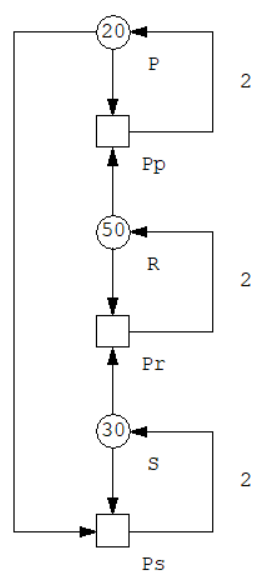 |
Lattice models
| Model | Description |
|---|---|
| Frean and Abraham | The \(N\) sites are taken to be sites in a periodic, rectangular lattice and each agent is activated once per time-step, in random order. During each activation, an agent competes with a randomly chosen neighboring agent. If the neighboring agent can be defeated, the agent wins the competition with a probability determined by the invasion rate. If the agent wins the competition, the neighboring agent is transformed into an individual of the same species of the winning agent. |
| Simultaneous activations | The \(N\) sites are again taken to be sites in a periodic, rectangular lattice, but at each time step, all agents are activated simultaneously. During each activation, each agent competes with all its neighboring agents. In a three species system, if an agent is surrounded by at least three neighbors of a species that defeats it, the agent is converted into an individual of that species. Please note that invasion rates are not used in this model. |
| Reichenbach, Mobilia and Frey model | In this model the \(N\) sites are taken to be sites in a periodic, rectangular lattice. Each patch can be occupied by one of the species or can be blank. Each tick, the following types of events happen at defined average rates: 1) Select event: Two random neighbors compete with each other; the losing patch becomes blank. 2) Reproduce event: Two random neighbors attempt to reproduce; if one of the neighbors is blank, it acquires the color of the other; nothing happens if neither neighbor is blank. 3) Swap event: Two random neighbors swap color; this event represents the organisms moving on the lattice. |
Long range model simulations
| Model | Parameters | Species evolution |
|---|---|---|
| Discrete time | \(N=1000\) \(P_r=0.2\) \(P_s=0.5\) \(P_p=0.3\) \(n_r^0=0.5\) \(n_s^0=0.3\) \(n_p^0=0.2\) |
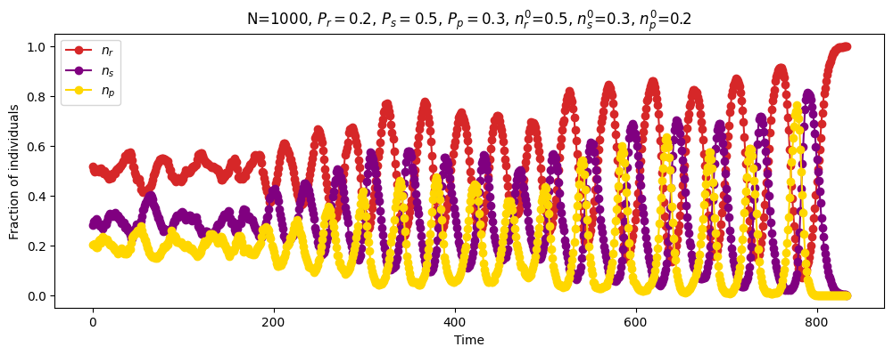 |
| Discrete time | \(N=1000\) \(P_r=0.2\) \(P_s=0.5\) \(P_p=0.3\) \(n_r^0=0.33\) \(n_s^0=0.33\) \(n_p^0=0.33\) |
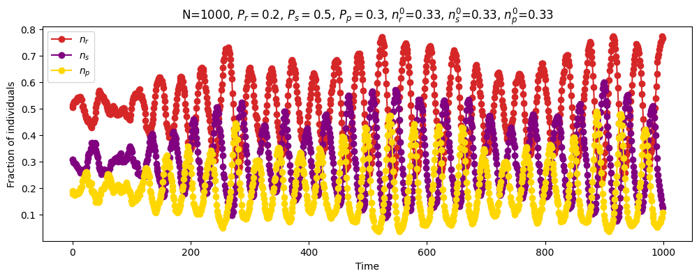 |
| Continuous time | \(N=\infty\) \(P_r=0.2\) \(P_s=0.5\) \(P_p=0.3\) \(n_r^0=0.5\) \(n_s^0=0.3\) \(n_p^0=0.2\) |
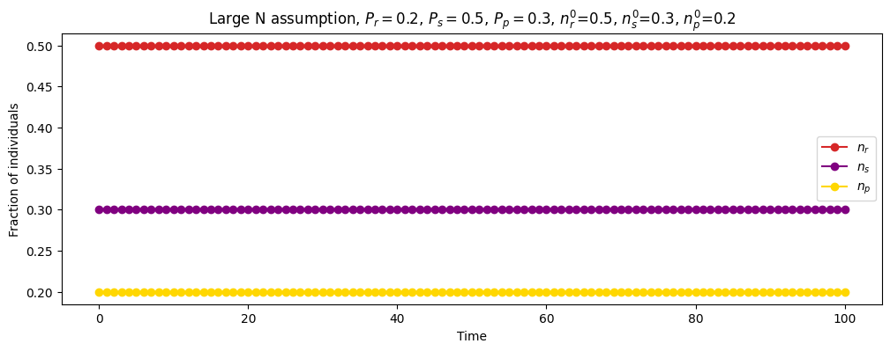 |
| Continuous time | \(N=\infty\) \(P_r=0.2\) \(P_s=0.5\) \(P_p=0.3\) \(n_r^0=0.33\) \(n_s^0=0.33\) \(n_p^0=0.33\) |
 |
| Discrete time (mean field recurrence relations) |
\(N=\infty\) \(P_r=0.2\) \(P_s=0.5\) \(P_p=0.3\) \(n_r^0=0.33\) \(n_s^0=0.33\) \(n_p^0=0.33\) \(\Delta_t=1\) |
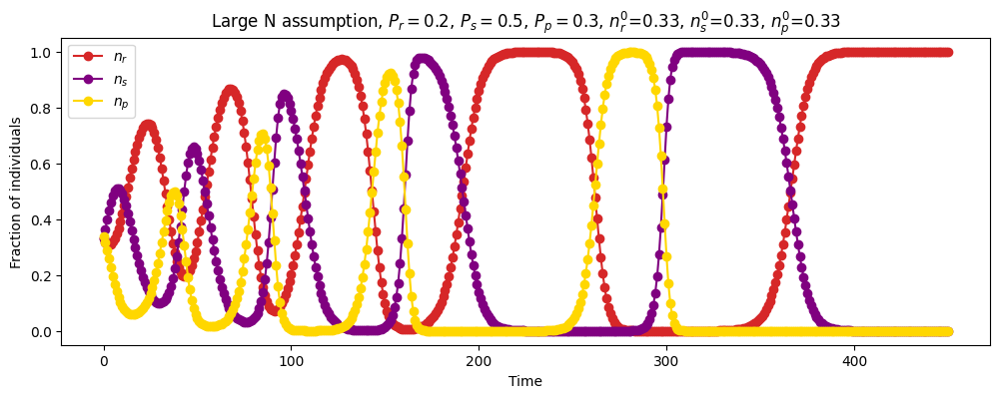 |
| Discrete time (mean field recurrence relations) |
\(N=\infty\) \(P_r=0.2\) \(P_s=0.5\) \(P_p=0.3\) \(n_r^0=0.33\) \(n_s^0=0.33\) \(n_p^0=0.33\) \(\Delta_t=0.01\) |
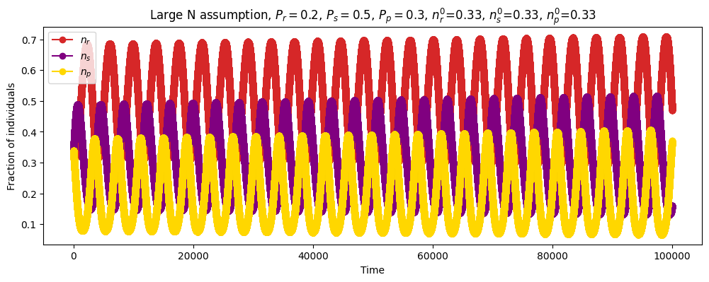 |
| Stochastic simulation of chemical reaction |
\(P_r=0.2\) \(P_s=0.5\) \(P_p=0.3\) \(R=50000\) \(S=30000\) \(P=20000\) |
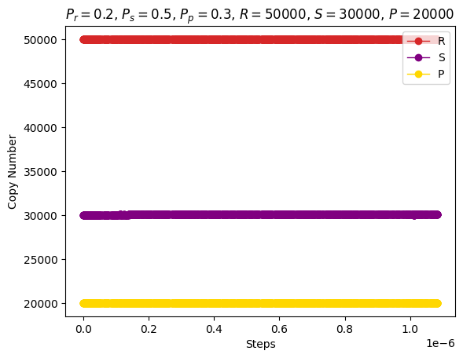 |
| Stochastic simulation of chemical reaction |
\(P_r=0.2\) \(P_s=0.5\) \(P_p=0.3\) \(R=50\) \(S=30\) \(P=20\) |
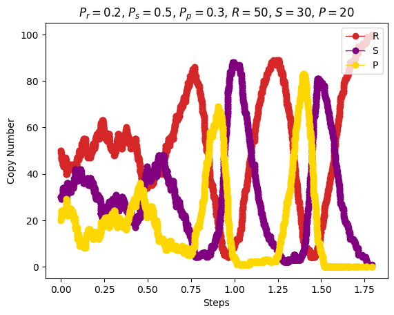 |
| Stochastic simulation of chemical reaction |
\(P_r=0.2\) \(P_s=0.5\) \(P_p=0.3\) \(R=33\) \(S=33\) \(P=33\) |
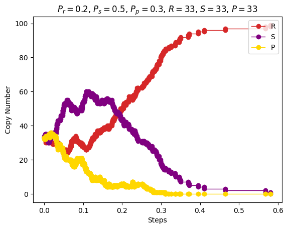 |
Lattice model simulations
Rules:
- with \(3\) species: \(r>s\); \(s>p\); \(p>r\)
- with \(4\) species: \(r>s\); \(s>p\); \(p>u\); \(u>r\); \((r,p)\) and \((s,u)\) do not compete
- with \(5\) species: \(r>s,p\); \(s>p,u\); \(p>u,v\); \(u>v,r\); \(v>r,s\)
| Model | Parameters | Animation | Species evolution |
|---|---|---|---|
| Frean and Abraham | \(n\_species=3\) \(N=200\cdot 200\) \(P_r=0.33\) \(P_s=0.33\) \(P_p=0.33\) \(n_r^0=0.33\) \(n_s^0=0.33\) \(n_p^0=0.33\) |
Around step \(100\) |
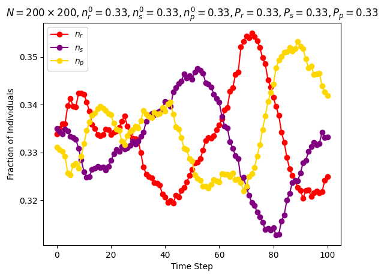 |
| Frean and Abraham | \(n\_species=3\) \(N=200\cdot 200\) \(P_r=0.1\) \(P_s=0.1\) \(P_p=0.8\) \(n_r^0=0.1\) \(n_s^0=0.8\) \(n_p^0=0.1\) |
Around step \(100\) |
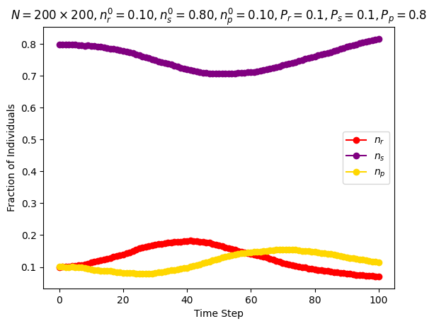 |
| Frean and Abraham | \(n\_species=3\) \(N=200\cdot 200\) \(P_r=0.05\) \(P_s=0.475\) \(P_p=0.475\) \(n_r^0=0.475\) \(n_s^0=0.475\) \(n_p^0=0.05\) |
Around step \(100\) |
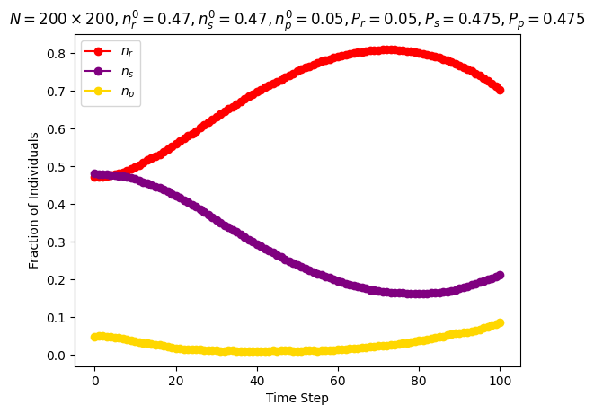 |
| Frean and Abraham | \(n\_species=3\) \(N=200\cdot 200\) \(P_r=0.05\) \(P_s=0.5\) \(P_p=0.3\) \(n_r^0=0.5\) \(n_s^0=0.3\) \(n_p^0=0.05\) \(increase\_r\_rate=\texttt{True}\) |
Around step \(100\) |
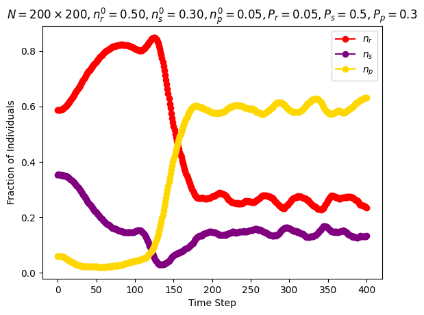 |
| Simultaneous activations | \(n\_species=3\) \(N=200\cdot 200\) \(n_r^0=0.33\) \(n_s^0=0.33\) \(n_p^0=0.33\) |
Around step \(200\) |
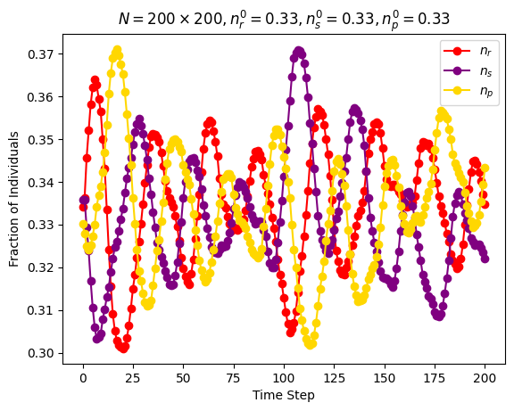 |
| Simultaneous activations | \(n\_species=3\) \(N=200\cdot 200\) \(n_r^0=0.2\) \(n_s^0=0.4\) \(n_p^0=0.4\) |
Around step \(400\) |
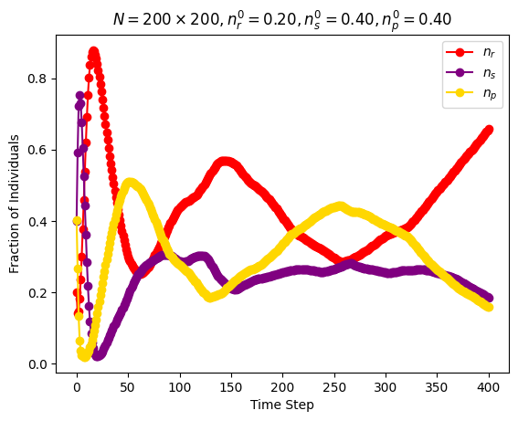 |
| Simultaneous activations | \(n\_species=3\) \(N=200\cdot 200\) \(n_r^0=0.1\) \(n_s^0=0.4\) \(n_p^0=0.5\) |
Around step \(30\) |
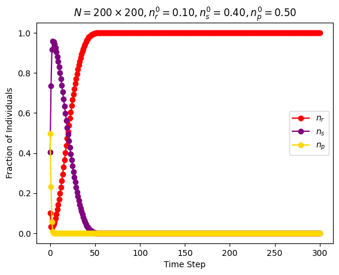 |
| Simultaneous activations | \(n\_species=4\) \(N=200\cdot 200\) \(n_r^0=0.25\) \(n_s^0=0.25\) \(n_p^0=0.25\) \(n_u^0=0.25\) |
Around step \(200\) |
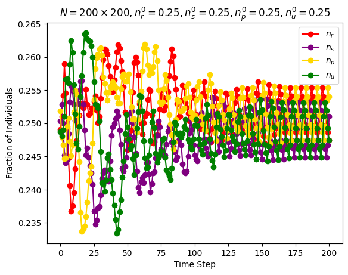 |
| Simultaneous activations | \(n\_species=5\) \(N=200\cdot 200\) \(n_r^0=0.2\) \(n_s^0=0.2\) \(n_p^0=0.2\) \(n_u^0=0.2\) \(n_v^0=0.2\) |
Around step \(100\) |
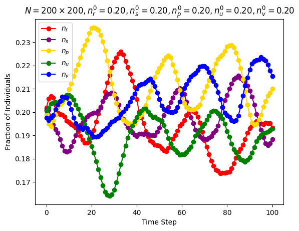 |
| Reichenbach, Mobilia and Frey model | \(n\_species=3\) \(N=150\cdot 150\) \(n_r^0=0.25\) \(n_s^0=0.25\) \(n_p^0=0.25\) \(n_u^0=0.25\) \(swap\_exp=-1\) \(reproduce\_exp=0\) \(select\_exp=0\) |
Around step \(300\) |
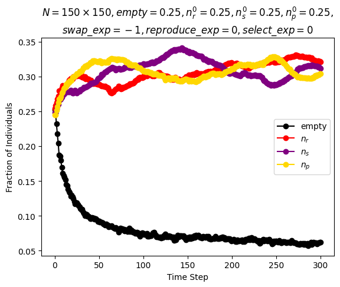 |
| Reichenbach, Mobilia and Frey model | \(n\_species=3\) \(N=150\cdot 150\) \(n_r^0=0.25\) \(n_s^0=0.25\) \(n_p^0=0.25\) \(n_u^0=0.25\) \(swap\_exp=0\) \(reproduce\_exp=0\) \(select\_exp=0\) |
Around step \(300\) |
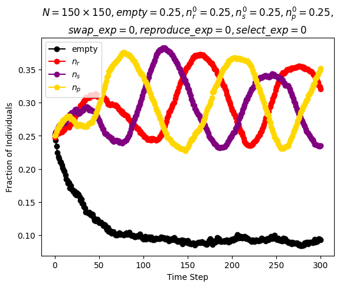 |
| Reichenbach, Mobilia and Frey model | \(n\_species=3\) \(N=150\cdot 150\) \(n_r^0=0.25\) \(n_s^0=0.25\) \(n_p^0=0.25\) \(n_u^0=0.25\) \(swap\_exp=0.5\) \(reproduce\_exp=0\) \(select\_exp=0\) |
Around step \(300\) |
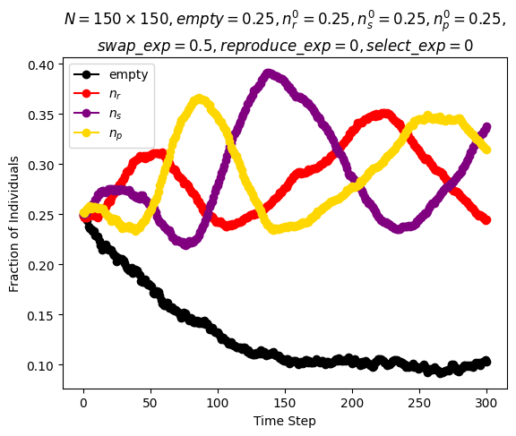 |
| Reichenbach, Mobilia and Frey model | \(n\_species=3\) \(N=150\cdot 150\) \(n_r^0=0.25\) \(n_s^0=0.25\) \(n_p^0=0.25\) \(n_u^0=0.25\) \(swap\_exp=1\) \(reproduce\_exp=0\) \(select\_exp=0\) |
Around step \(300\) |
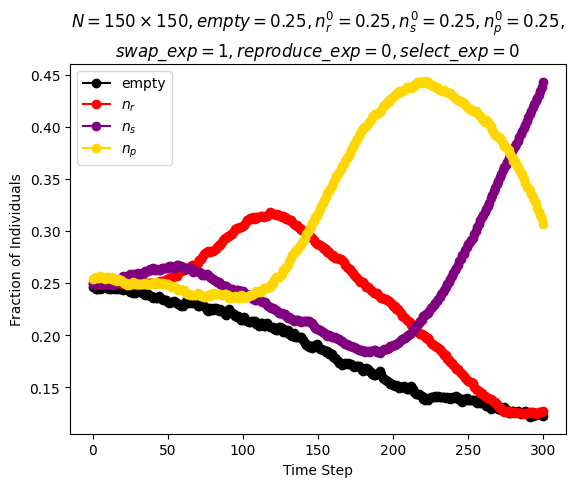 |
| Reichenbach, Mobilia and Frey model | \(n\_species=3\) \(N=100\cdot 100\) \(n_r^0=0.25\) \(n_s^0=0.25\) \(n_p^0=0.25\) \(n_u^0=0.25\) \(swap\_exp=1\) \(reproduce\_exp=-0.7\) \(select\_exp=-0.7\) |
Around step \(1000\) |
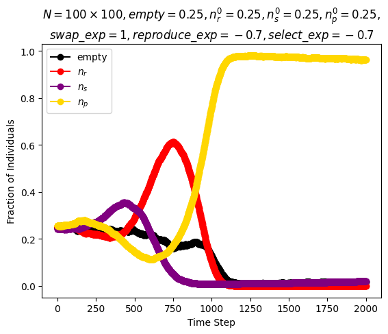 |
| Reichenbach, Mobilia and Frey model | \(n\_species=4\) \(N=150\cdot 150\) \(n_r^0=0.2\) \(n_s^0=0.2\) \(n_p^0=0.2\) \(n_u^0=0.2\) \(swap\_exp=0\) \(reproduce\_exp=0\) \(select\_exp=0\) |
Around step \(300\) |
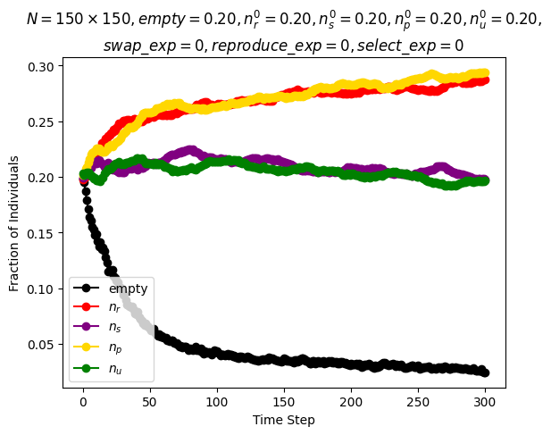 |
| Reichenbach, Mobilia and Frey model | \(n\_species=5\) \(N=150\cdot 150\) \(n_r^0=0.17\) \(n_s^0=0.17\) \(n_p^0=0.17\) \(n_u^0=0.17\) \(n_v^0=0.17\) \(swap\_exp=0\) \(reproduce\_exp=0\) \(select\_exp=0\) |
Around step \(300\) |
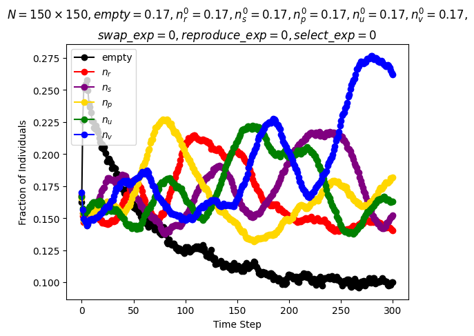 |
Additional Experiments
| Model | Experiment |
|---|---|
| Discrete time | 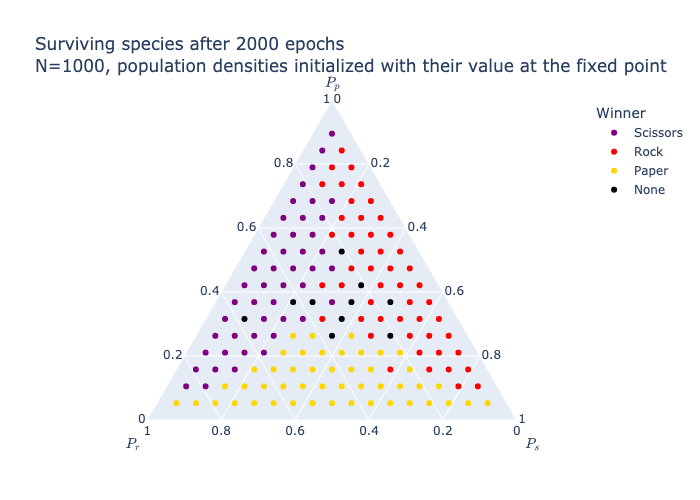 |
| Continuous time | 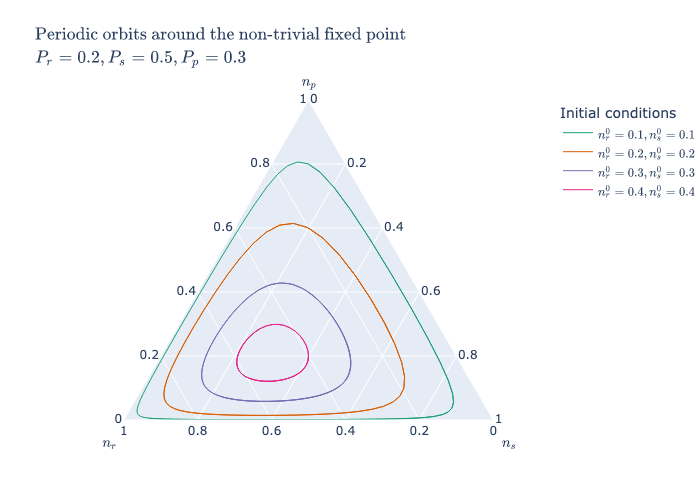 |
| Discrete time | 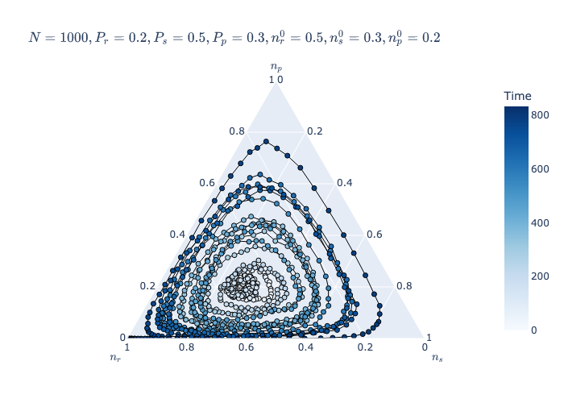 |
| Lattice model, Frean and Abraham |
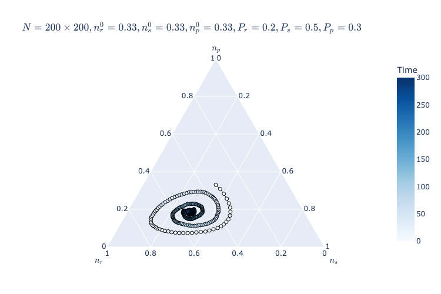 |
| Lattice model, Frean and Abraham |
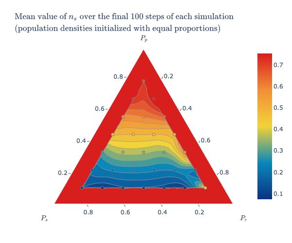 |
Stochastic Model Checking
| Query | Result |
|---|---|
P=?[ F r=0 ] |
\(0.14\) |
P=?[ F s=0 ] |
\(0.98\) |
P=?[ F (MAX-r-s)=0 ] |
\(0.87\) |
P=?[ F (r=70 & (F r=0)) ] |
\(0.14\) |
P=?[ F (s=70 & (F s=0)) ] |
\(0.65\) |
P=?[ F ((MAX-r-s)=70 & (F (MAX-r-s)=0)) ] |
\(0.29\) |
P=?[ F (MAX-r-s)=0 & s=0 ] |
\(0.12\) |
P=?[ F s=0 & r=0 ] |
\(0.02\) |
P=?[ F r=0 & (MAX-r-s)=0 ] |
\(0.86\) |
P=? [ F<time r=0 ]P=? [ F<time s=0 ]P=? [ F<time (MAX-r-s)=0 ] |
 |
P=? [F<time (r=0 | r=MAX | s=0) &(s=0 | s=MAX | (MAX-r-s)=0) &((MAX-r-s)=0 | (MAX-r-s)=MAX | r=0)] |
 |
P=? [ F=1 r>=x & r<x+10 ]P=? [ F=1 s>=x & s<x+10 ]P=? [ F=1 (MAX-r-s)>=x & (MAX-r-s)<x+10 ] |
 |
Petri Net Analysis
P-, T-invariants and Siphons
- The Transition Matrix C (where rows are indexed by P, R, S and columns by Pp, Pr, Ps in this order) is \[C = \begin{bmatrix} 2 & 0 & 0 \\ 0 & 2 & 0 \\ 0 & 0 & 2 \end{bmatrix} - \begin{bmatrix} 1 & 0 & 1 \\ 1 & 1 & 0 \\ 0 & 1 & 1 \end{bmatrix}\]
- \(x \cdot C = 0 \iff x=[1,1,1]\), x is a Place Invariant (the sum of the number of tokens in the places is equal to \(100\))
- \(C \cdot y = 0 \iff y=[1,1,1]^t\), y is a Transition Invariant (applying the three transitions an equal number of times will not change the marking of the net)
- \(\{P\}, \{R\}, \{S\}\) are minimal siphons (once a species goes extinct, it cannot be reintroduced in the system)
- \(\bullet \{P\} = \{Pp\} \subseteq \{P\}\bullet =\{Pp, Ps\} \implies \{P\}\) is a siphon
- \(\bullet \{R\} = \{Pr\} \subseteq \{R\}\bullet =\{Pr, Pp\} \implies \{R\}\) is a siphon
- \(\bullet \{S\} = \{Ps\} \subseteq \{S\}\bullet =\{Ps, Pr\} \implies \{S\}\) is a siphon
Properties
| Abbreviation | Name | Description | Status |
|---|---|---|---|
| PUR | pure | \(\forall x, y \in P \cup T : f (x, y) \neq 0 \implies f (y, x) = 0\), i.e. there are no two nodes, connected in both directions. This precludes read arcs. Then the net structure is fully represented by the incidence matrix, which is used for the calculation of the P- and T-invariants. | ❌ |
| ORD | ordinary | \(\forall x, y \in P \cup T : f (x, y) \neq 0 \implies f (x, y) = 1\), i.e. all arc weights are equal to 1. This includes homogeneity. A non-ordinary Petri net cannot be live and 1-bounded at the same time. | ❌ |
| HOM | homogeneous | \(\forall p \in P :t,t^{\prime} \in p• \implies f(p,t)=f(p,t^{\prime})\), i.e. all outgoing arcs of a given place have the same multiplicity. | ✅ |
| NBM | non blocking multiplicity | A net has non-blocking multiplicity if \(\forall p \in P :•p \neq \emptyset \land min\{f(t,p)\vert \forall t \in •p\}\geq max\{f(p,t)\vert \forall t \in p•\}\), i.e. an input place causes blocking multiplicity. Otherwise, it must hold for each place: the minimum of the multiplicities of the incoming arcs is not less than the maximum of the multiplicities of the outgoing arcs. | ✅ |
| CSV | conservative | A Petri net is conservative if \(\forall t \in T : \sum_{p \in •t} f(p,t) = \sum_{p \in t•} f(t,p)\) i.e. all transitions add exactly as many tokens to their postplaces as they subtract from their preplaces, or briefly, all transitions fire token-preservingly. A conservative Petri net is structurally bounded. | ✅ |
| SCF | structurally conflict free | A Petri net is static (or structurally) conflict free if \(\forall t,t^{\prime} \in T :t \neq t^{\prime} \implies •t \cap •t^{\prime} = \emptyset\), i.e. there are no two transitions sharing a preplace. Transitions involved in a static conflict compete for the tokens on shared preplaces. Thus, static conflicts indicate situations where dynamic conflicts, i.e. nondeterministic choices, may occur in the system behaviour. However, it depends on the token situation whether a conflict does actually occur dynamically. There is no nondeterminism in SCF nets. | ❌ |
| FT0 | every transition has a pre-place | \(\forall t: •t \neq \emptyset\) | ✅ |
| TF0 | every transition has a post-place | \(\forall t: t• \neq \emptyset\) | ✅ |
| FP0 | every place has a pre-transition | \(\forall p: •p \neq \emptyset\) | ✅ |
| PF0 | every place has a post-transition | \(\forall p: p• \neq \emptyset\) | ✅ |
| CON | connected | A Petri net is connected if it holds for every two nodes \(a\) and \(b\) that there is an undirected path between \(a\) and \(b\). Disconnected parts of a Petri net cannot influence each other, so they can usually be analyzed separately. | ✅ |
| SC | strongly connected | A Petri net is strongly connected if it holds for every two nodes \(a\) and \(b\) that there is a directed path from \(a\) to \(b\). Strong connectedness involves connectedness and the absence of boundary nodes. It is a necessary condition for a Petri net to be live and bounded at the same time. | ✅ |
| NC | netclass | The net structure class: 1) A Petri net is called State Machine (SM) if \(\forall t\in T :\vert •t \vert =\vert t•\vert \leq 1\), i.e. there are neither forward branching nor backward branching transitions. 2) A Petri net is called Synchronisation Graph (SG) if \(\forall p\in P :\vert •p\vert =\vert p•\vert \leq 1\), i.e. there are neither forward branching nor backward branching places. 3) A Petri net is called Extended Free Choice (EFC) if \(\forall p,q\in P:p• ∩q• =\emptyset \lor p• =q•\), i.e. transitions in conflict have identical sets of preplaces. 4) A Petri net is called Extended Simple (ES) if \(\forall p,q\in P:p• \cap q• =\emptyset \lor p• \subseteq q• \lor q• \subseteq p•\), i.e. every transition is involved in one conflict at most. 5) If the net does not comply to any of the introduced net structure classes, it is said to be not Extended Simple (nES). | nES |
| RKTH | rank theorem | \(rank(IM) \neq \vert SCCS\vert - 1 \implies !RKTH\), i.e. if the rank of the incidence matrix is not equal to the number of strongly connected components (maximal sets of strongly connected nodes) minus one, then the rank theorem does not hold. | ❌ |
| STP | siphon trap property | The siphon trap property holds if no siphons are bad. A siphon is called bad if it does not include a trap. | ❌ |
| CPI | covered by P-invariants | A net is covered by P-invariants, shortly CPI, if every place belongs to a P-invariant. | ✅ |
| CTI | covered by T-invariants | A net is covered by T-invariants, shortly CTI, if every transition belongs to a T-invariant. | ✅ |
| SCTI | strongly covered by T-invariants | The two transitions modelling the two directions of a reversible reaction always make a minimal T-invariant and they are called trivial T-invariants. A net which is covered by nontrivial T-invariants is said to be strongly covered by T-invariants. | ✅ |
| SB | structurally bounded | A net is structurally bounded if it is bounded for any initial marking | ✅ |
| k-B | k-bounded | A place \(p\) is k-bounded (bounded for short) if there exists a positive integer number \(k\), which represents an upper bound for the number of tokens on this place in all reachable markings of the Petri net: \(\exists k \in \mathbb{N}_0 :\forall m\in [m_0⟩:m(p)\leq k\). A Petri net is k-bounded (bounded for short) if all its places are k-bounded. | 100 |
| DCF | dynamically conflict free | Dynamic conflict is a behavioral property which refers to a marking enabling two transitions, but the firing of one transition disables the other one. The occurrence of dynamic conflicts causes alternative (branching) system behavior, whereby the decision between these alternatives is taken nondeterministically. | ❌ |
| DSt | no dead state(s) | True if the net does not have dead states (markings). | 3 |
| DTr | no dead transition(s) | If the net does not have dead transitions at the initial state. | ✅ |
| LIV | live | A Petri net is live (strongly live) if each transition is live. | ❌ |
| REV | reversible | A Petri net is reversible if the initial marking can be reached again from each reachable marking: \(\forall m \in [m_0⟩ : m_0 \in [m⟩\) | ❌ |